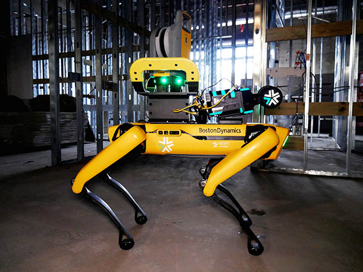

University of Pennsylvania's GRASP Lab
11/2022 - PresentResearch Engineer
I joined GRASP Laboratory to continue my pursuits in the world of AI and Robotics. On the day-to-day, I get to actively participate in what is considered "state-of-the-art" in autonomous systems research. I maintain a majority of the software infrastructure of the lab and help PhDs in integrating and implementing their algorithms.
Projects at GRASP

Exyn Technologies
01/2021-08/2022Autonomy Integration Engineer // Field Engineer
My time at Exyn was crucial to developing my understanding of not only Robotics Software, but Software as a whole. I worked alongside incredible engineers and, often, found myself hitting the limits of knowledge, forcing me to take in as much information as I could. The exposure to autonomy I got at Exyn was the seed that inspired me to pursue AI in Robotics as a career.
Projects at Exyn

I wrote the C++ driver for communicating with a docking station through gRPC. The main task was to ensure both technical and human safety during comms.
I was able to travel to different countries/cities and show miners how our Autonomy Stack could help automate the many scanning tasks within the mines.


Nauticus Robotics
(Formerly Known as Houston Mechatronics)
Mechatronics Design Engineer
During my time at Houston Mechatronics, I got to witness, for the first time, how a major robotics project comes together. I got to work alongside a talented group of individuals, all with very diverse work backgrounds. Getting to work on hardware from the ground-up was an incredible experience that changed me persepective on the structure of robots as a whole.
Projects at Nauticus
I designed the next-gen iteration of the mechanisms and actuators responsible for actuating Aquanaut's upper and lower hulls

I designed housing for critical electrical components that enabled Aquanaut to traverse 3000m deep into the sea
Conducted testing at NASA's Neutral Buoyancy Laboratory to validate critical electro-mechanical systems